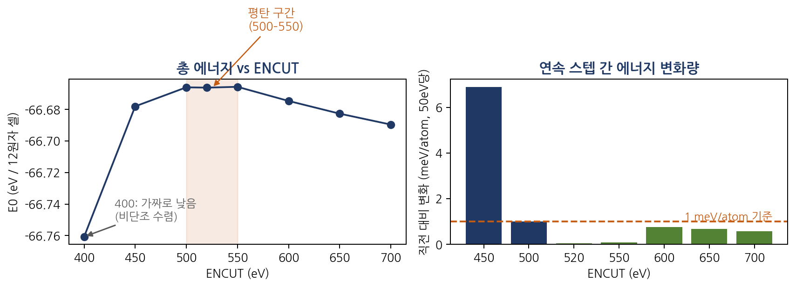

DFT 실습 [2] — 폴더 여덟 개로 그린 인생 첫 수렴 곡선
실습 [1]에서 첫 에너지를 뽑았을 때 스스로에게 한 다짐이 있습니다. "숫자가 나왔다"와 "믿을 수 있다"는 다른 문제라는 것. 오늘은 그 다짐을 실행한 날입니다. 입력 파일 열한 줄을 전부 해명하고, 계산 로그를 드라마처럼 읽는 법을 배우고, 폴더 여덟 개로 첫 수렴 곡선을 그려 설정값 하나(ENCUT)를 감이 아니라 데이터로 확정했습니다.
1. INCAR 열한 줄, 조종석의 스위치들
실습 [1]에서 쓴 INCAR를 이제 전부 설명할 수 있게 됐습니다. 열한 줄은 사실 여섯 그룹입니다:
| 그룹 | 태그 | 뜻 |
|---|---|---|
| 정확도 다이얼 | ENCUT=520 / EDIFF=1E-5 | 평면파 해상도 상한 / SCF 종료 조건("두 반복의 에너지 차가 이보다 작으면 멈춰라") |
| 전자 채우기 | ISMEAR=0 / SIGMA=0.05 | 페르미 준위의 급격한 계단을 가우시안으로 살짝 뭉개 수치적으로 다루기 쉽게 |
| 자성 = 물리 | ISPIN=2 / MAGMOM=3*0 3*4 6*0 | 스핀 켜기 + 초기 스핀 가설(Mn³⁺ 고스핀 4μB). 이 파일에서 유일하게 물리적 주장이 담긴 줄 |
| 루프 범위 | NSW=0 / IBRION=-1 | 원자는 고정, 전자 문제(SCF)만. 바깥 이완 루프 끄기 |
| 속도 트레이드오프 | LREAL=.FALSE. | 투영 연산을 역공간에서 정확하게(작은 셀에 적합). 비교 계산끼리 반드시 동일해야 하는 설정 |
| 분석 출력 | LORBIT=11 | 원자별·오비탈별 분해 저장. 이온별 자기모멘트와 pDOS의 재료 |
핵심 발견은 이것입니다: 설정값에는 출처가 있다. ENCUT=520은 POTCAR에 적힌 원소별 요구치(ENMAX) 중 최댓값인 산소의 400 eV에 관례 계수 1.3을 곱한 값이고, MAGMOM의 4는 이론 [2]에서 유도한 훈트 규칙의 결과입니다. "남들이 쓰길래"는 출처가 아닙니다.
2. 로그를 드라마로 읽기, 4막 구조
계산이 도는 동안 로그에는 SCF 반복이 한 줄씩 쌓입니다(DAV로 시작하는 줄들). 스물세 줄짜리 어제 로그를 다시 읽어 보니 4막 드라마였습니다:
- 1막 (1~4행): 급강하. 초기 파동함수가 엉터리라 에너지 +1362에서 −100까지 폭락. 이 구간엔 밀도 불일치 지표(rms(c)) 열이 아예 비어 있는데, 초반 몇 스텝은 밀도를 고정한 채 파동함수만 다듬기 때문입니다.
- 2막 (5~7행): 요동. 밀도 갱신이 시작되자 에너지가 −127에서 −68로 58 eV를 널뜁니다. 고장이 아니라 망간의 스핀 배치가 자리를 잡는 몸부림입니다. 자성 산화물의 트레이드마크이고, 잘못된 스핀 상태에 안착해버릴 수도 있는 위험 구간이기도 합니다.
- 3막 (8~15행): 정착. 에너지 변화(dE)의 지수가 한 반복마다 한 자릿수씩 줄어듭니다. 밀도 혼합 알고리즘이 과거 반복들을 학습해 다음 추측을 점점 잘하게 되는 구간.
- 4막 (16~23행): 지수적 수렴, 그리고 판결문. 23번째 줄에서 dE = 5.4×10⁻⁶ < EDIFF(1×10⁻⁵). 문턱 통과, 종료. 마지막 줄
F= ... E0= ... mag=가 판결문입니다. 비교·보고에 쓰는 값은 스미어링 효과를 제거한 E0 쪽이고, mag는 물리 검산용.
여기서 건강검진 체크리스트가 나왔습니다. 앞으로 모든 계산에서 이 순서로 봅니다: ① 한도 안에서 dE < EDIFF 달성했나 → ② mag가 물리적으로 말이 되나 → ③ 후반 dE가 지수적으로 감소하는 모양인가 → ④ F와 E0의 차이가 작나(스미어링 적절성). 어제 계산은 네 항목 전부 통과였습니다.
3. 수렴 테스트의 설계, 변인 통제라는 직업윤리
이제 본론. ENCUT=520이 정말 충분한 해상도인지 확인하려면 값을 바꿔가며 에너지가 어디서부터 변하지 않는지 봐야 합니다. 설계 원칙은 실험과학 그대로 변인 통제입니다:
- 기존 결과는 절대 덮어쓰지 않는다. 폴더를 복사해 ENCUT값을 이름에 박는다 (enc400, enc450, …).
- 복사본에서 이전 계산의 산출물(WAVECAR, CHGCAR 등)을 지운다. 남아 있으면 VASP가 이전 답에서 이어서 시작해 순수한 비교가 아니게 된다.
- 수정은 단 한 줄(ENCUT)만. 두 변수가 동시에 움직인 데이터는 어느 쪽 효과인지 분리할 수 없어 버려야 한다.
여덟 폴더를 손으로 만드는 대신, 반복문으로:
for E in 450 500 550 600 650 700; do
cp -r test01 enc$E # 원본 보존, 복사본 생성
cd enc$E
rm -f WAVECAR CHGCAR CHG OUTCAR OSZICAR vasp.log CONTCAR
sed -i "s/ENCUT = 520/ENCUT = $E/" INCAR # 딱 한 줄만 수정
sed -i "s/NaMnO2_test/e$E/" jobscript
qsub jobscript # 제출 — 여섯 개가 병렬로 돈다
cd ..
done노드가 여유로워 여섯 잡이 동시에 돌았고, 전부 끝나는 데 십 분이 안 걸렸습니다. 수확도 한 줄입니다. 각 폴더의 결과 파일에서 E0만 뽑아 표로:
enc400 -.66760736E+02
enc450 -.66678097E+02
enc500 -.66666055E+02
enc520 -.66666258E+02
enc550 -.66665737E+02
enc600 -.66674690E+02
enc650 -.66682744E+02
enc700 -.66689650E+024. 곡선 판독, 그리고 예상 밖의 발견

곡선이 말하는 것 세 가지:
- 400은 탈락. 다른 점들과 원자당 ~6 meV나 벗어나 있습니다. 흥미로운 건 그 방향입니다. 에너지가 더 낮게 나왔습니다.
- 500~550은 평탄. 세 점(500, 520, 550)의 차이가 원자당 0.05 meV 이하로 사실상 동일합니다.
- 600부터 다시 슬금슬금. 원자당 스텝마다 ~0.6 meV씩 내려가며, 700에서도 완전히 멈추지 않았습니다.
첫 번째와 세 번째가 교과서의 순진한 기대("기저를 늘리면 에너지는 위에서 단조롭게 내려온다")를 배신합니다. 배운 것: 변분 원리의 단조 감소는 문제 자체가 완전히 고정된 채 기저만 커질 때 성립하는데, 실제 코드에서는 ENCUT을 바꾸면 밀도를 올려놓는 격자와 보정항들도 함께 바뀝니다. 그래서 수렴 곡선은 출렁이며 접근하는 것이 정상이고, 올바른 질문은 "어느 쪽이 낮은가"가 아니라 "어디서부터 더 안 변하는가"입니다.
그럼 600 이후의 잔여 드리프트는? 절대 총 에너지는 원래 아주 높은 컷오프까지 천천히 기어가는 게 정상입니다. 하지만 연구에서 쓰는 것은 절대값이 아니라 같은 세팅끼리의 에너지 차이이고, 그 느린 꼬리는 비교하는 양쪽에서 거의 똑같이 생겨 차이에서 상쇄됩니다. "절대 에너지가 아니라 에너지 차이의 수렴을 보라"는, 계획 문서에 적어만 두었던 문장이 오늘 데이터가 됐습니다.
5. 판결, ENCUT = 520으로 동결
근거 세 줄:
- 평탄 구간(500~550)의 한가운데다.
- POTCAR 규칙(최대 ENMAX 400 × 1.3)과 일치하는 커뮤니티 표준값이다.
- 이후 모든 계산이 같은 값을 쓰는 한, 절대 수렴의 잔여 오차는 차이에서 상쇄된다. 650이나 700은 정확도 이득이 미미한데 비용만 (평면파 수 ∝ ENCUT^1.5로) 불어난다.
그리고 랩노트에 도장: "ENCUT 수렴테스트 완료(400–700, 8점). 결정: ENCUT=520 동결." 앞으로 이 프로젝트의 모든 계산에서 이 줄은 건드리지 않습니다. 바꾸는 순간 그 전까지의 데이터와 비교 불능이 되니까요.
이날 배운 것들
- 설정값을 데이터로 확정하는 절차를 처음 완주했다. 감 → 스캔 → 곡선 → 판결 → 동결.
- 수렴은 단조롭지 않다. 가짜로 낮은 에너지(enc400)에 속지 않으려면 절대값이 아니라 변화량을 봐야 한다.
- for + sed + qsub 세 줄이면 여덟 계산이 자동으로 돈다. 다음 단계(배열 수십 개 스캔)의 축소판을 오늘 경험했다.
- 로그는 드라마다. 4막 구조와 건강검진 체크리스트(수렴/모멘트/감소 모양/F−E0)가 생겼다.
다음. 수렴 테스트의 나머지 절반인 k-mesh입니다. 같은 요령으로 KPOINTS 한 줄만 바꿔가며(2×2×1부터 10×10×4까지) 브릴루앙 존 샘플링 밀도를 확정하면, "정확도 다이얼 두 개"가 모두 데이터로 잠기고 진짜 물리 계산(구조 이완, 그리고 Na를 빼는 탈소듐)으로 넘어갈 자격이 생깁니다.

Seok
연구하듯 사업합니다. 배터리 재료를 원자 단위에서 계산하는 법을 바닥부터 배우는 중입니다. → 연구 · DFT 글 더 보기